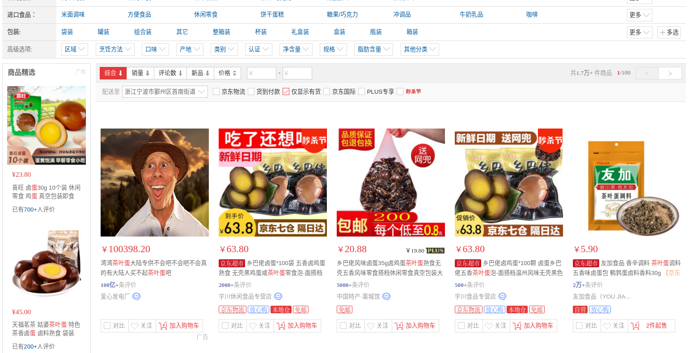

Web 实验
在大致清楚 Web 的原理之后，我们通过一些实验来加深对它的印象，为之后的爬虫和服务器搭建做准备。
修改 HTML
请发挥创意，魔改一个网页，例子如下：

展示自己的列表
请用以下 Python 代码下载豆瓣电影 top250 页面 https://movie.douban.com/top250
import requests
# 这是要爬的页面的地址
url = "https://movie.douban.com/top250"
# 这一条 header 把自己伪装成了一个浏览器，这样豆瓣才会理你。各位可以试试不加 header 会发生什么。
# 具体原理，我们在之后的 `HTTP 协议和伪装` 里会讲。
headers = {
"User-Agent": "Mozilla/5.0 (X11; Linux x86_64) AppleWebKit/537.36 (KHTML, like Gecko) Chrome/90.0.4430.72 Safari/537.36"
}
# 发送请求，带上 header 的伪装
result = requests.get(url, headers=headers)
# 把服务器返回的消息拿出来
print(result.text)
然后，你要把网页保存到本地：
with open("./website.html", "w") as f:
f.write(result.text)
然后，你可以双击打开这个 html。它就在你的本地打开了（只不过排版有点点不对）。
请用之前的销售记录 sales.csv，把页面里每个电影的名字换成 sales.csv 数据里的人名（用前50个人名就行），效果如图所示。

请搜索 beautiful soup，并阅读文档。这是一个非常好用的处理 HTML 文件的第三方库。可以使用 pip install beautifulsoup4 进行安装。
信息汇总
请把电影的信息汇总成一个 csv 或者 excel 表格。